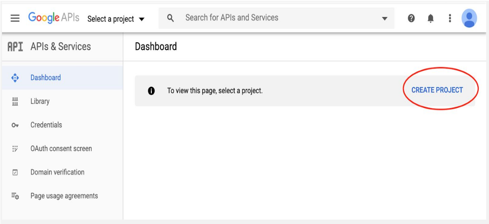
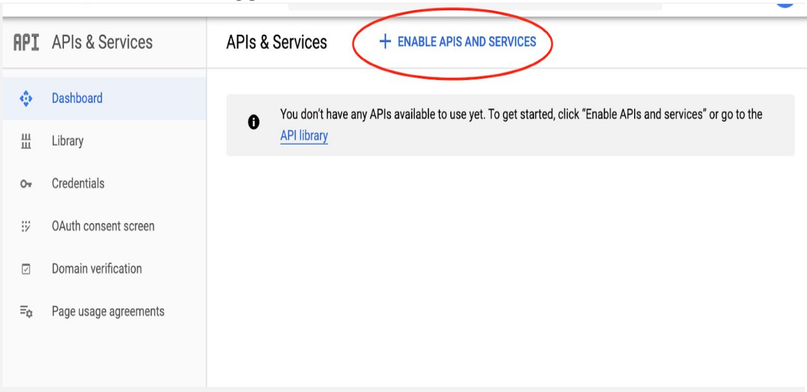
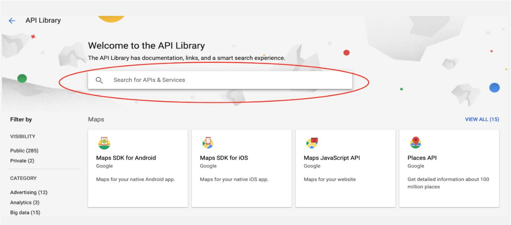
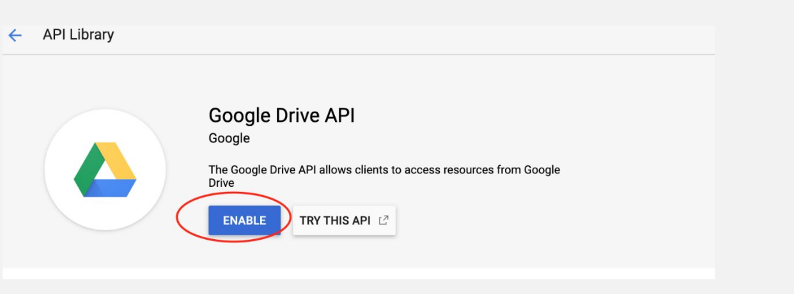
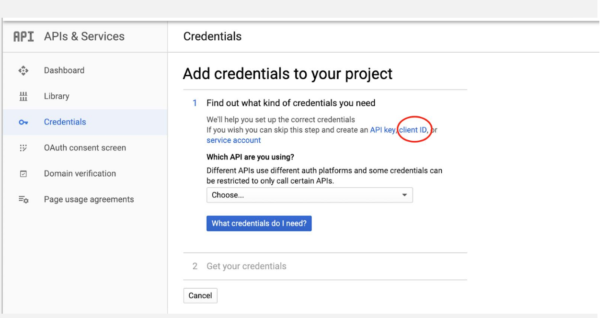
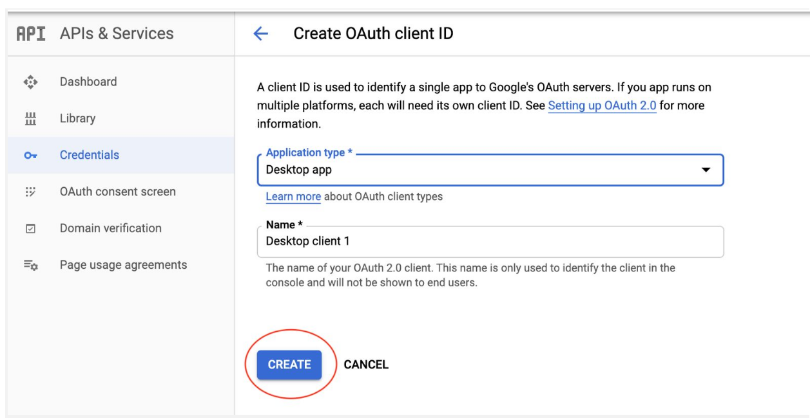
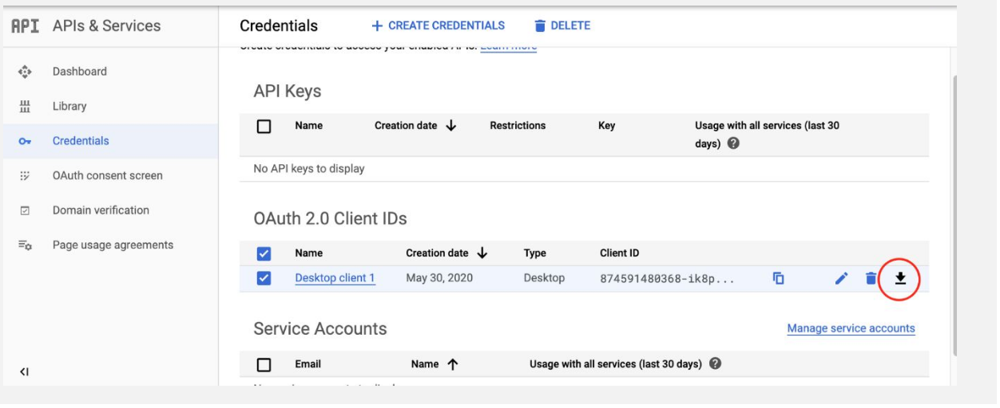
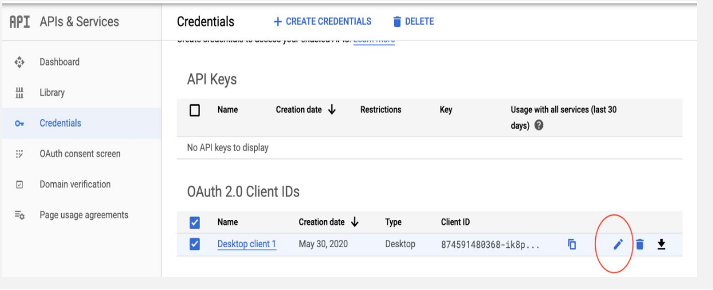

Step 00
Clone & Prepare the Repository
Before configuring Google Cloud, you need the source code on your local machine or Raspberry Pi. This repository contains the specific config/ structure expected by the sync engine.
Run on your Pi / Device:
config/ directory created by this clone.
Expected Project Structure:
Step 01
Create a New Google Cloud Project
Everything starts in the Google Developer Console. A project is your isolated workspace that will hold all API keys, OAuth credentials, and service configurations.
On the Dashboard, look for the banner that reads "To view this page, select a project."
Click CREATE PROJECT (the blue link, circled in red in the screenshot).
Enter a project name like bioacoustic-edge and click Create.

Step 02
Enable the Google Drive API
With your project created, you need to explicitly turn on the Google Drive API. APIs are disabled by default — you only pay for what you activate.
Click + Enable APIs and Services
From the APIs & Services Dashboard, click the circled blue button at the top.

Search for "Google Drive API"
You'll land in the API Library. Use the big search bar to find the Drive API.

Click ENABLE
Open the Google Drive API product page and hit the blue ENABLE button.

Step 03
Generate OAuth 2.0 Credentials
You need to create an OAuth 2.0 Client ID — the "identity card" your Python script uses to prove itself to Google.
Navigate to Credentials → Create Credentials
From the left sidebar, click Credentials. Then choose + CREATE CREDENTIALS and select OAuth client ID (circled in red).

Select "Desktop app" then click CREATE
On the creation form, set Application type to Desktop app. Leave the name as default (Desktop client 1) and click CREATE.

Download the JSON secret file
Back on the Credentials list, find your newly created Desktop client 1. Click the Download icon ⬇ (circled in red) to get the JSON file.
client_secrets.json and place it inside config/ in your project.

Step 04 — Final
Install PyDrive & Configure settings.yaml
With the JSON downloaded, the last step is to tell PyDrive where to find it, and configure it to persist the token so the Pi never needs browser interaction again.
1. Install PyDrive
2. Get your client_id & secret
Click the Edit (pencil) icon on your credential (circled below) to reveal your client_id and client_secret.

3. Edit config/settings.yaml
Create or update this file in your project's config/ folder. Replace the placeholder values with your actual credentials:
# config/settings.yaml client_config_backend: settings client_config: client_id: your_client_id_here client_secret: your_client_secret_here save_credentials: True save_credentials_backend: file save_credentials_file: credentials.json get_refresh_token: True oauth_scope: - https://www.googleapis.com/auth/drive.file
python src/main.py, a browser tab will open asking you to sign in with Google. After granting permission, PyDrive saves a credentials.json token file. All future runs — including headless Pi reboots — will silently reuse this token. 🎉
✅ Deployment Checklist
File Placement
config/client_secrets.jsonconfig/settings.yaml
First Run
Execute python src/main.py once locally to authenticate in browser
On the Pi
Copy credentials.json to config/ — the Pi will use it silently forever